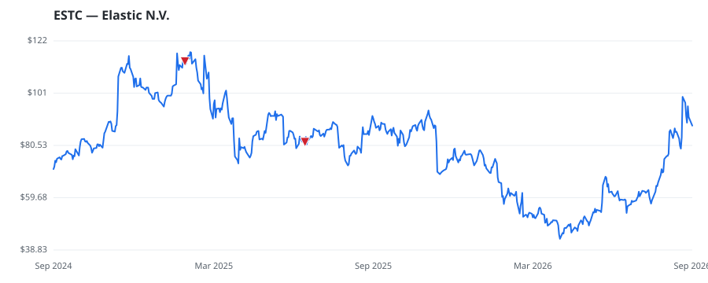

bullish · bearish · n/a — dots: price>SMA10 · SMA10>SMA50 · SMA50>SMA200 · up>down volume (20d)
Software & Services · mid cap · ★ 1 buyer(s) sit on a committee that regulates this industry
Members who bought ESTC earned a dollar-weighted -1.2% from their disclosure dates, versus +9.2% for the S&P 500 over the same holding windows (-10.4% alpha).

▲ green = a disclosed purchase · ▼ red = a disclosed sale (plotted on disclosure date)
Elastic is a software company that specializes in AI-search, observability, and security deployments. Its search division offers both traditional keyword search and vector search methods to enable more context-aware querying. The software has open-source origins but generates revenue through valuable add-ons, including simplified data orchestration and server scaling techniques. SERVICES-PREPACKAGED SOFTWARE · website
| Revenue | $1.7B | Net income | $367.8M |
|---|---|---|---|
| Operating income | $-33.5M | Diluted EPS | $3.43 |
| Assets | $3.2B | Equity | $1.3B |
| Member | Chamber | Out-performer | Disclosed buys $ | Return on buys |
|---|---|---|---|---|
| Rohit Khanna ★ | house | — | $8K | -1.2% |
Disclosed $ figures are bracket midpoints — filings report ranges (e.g. $1,001–$15,000), not exact amounts.